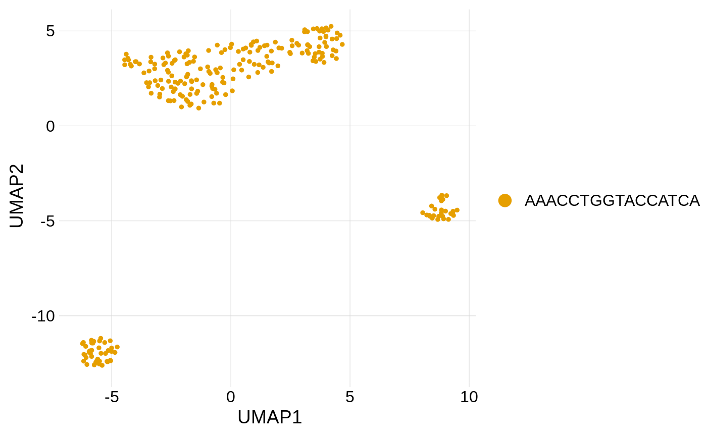
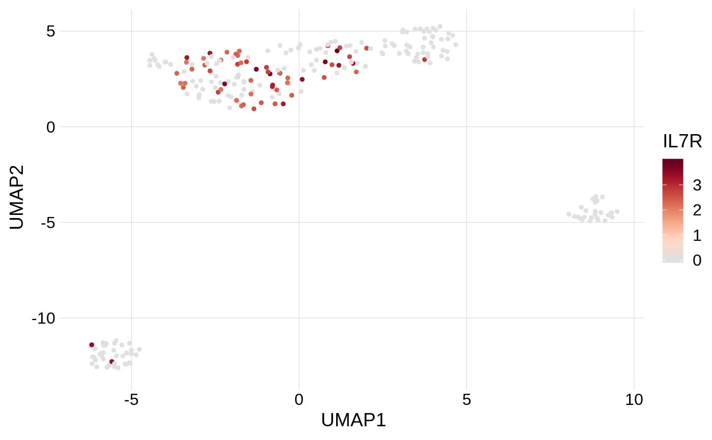
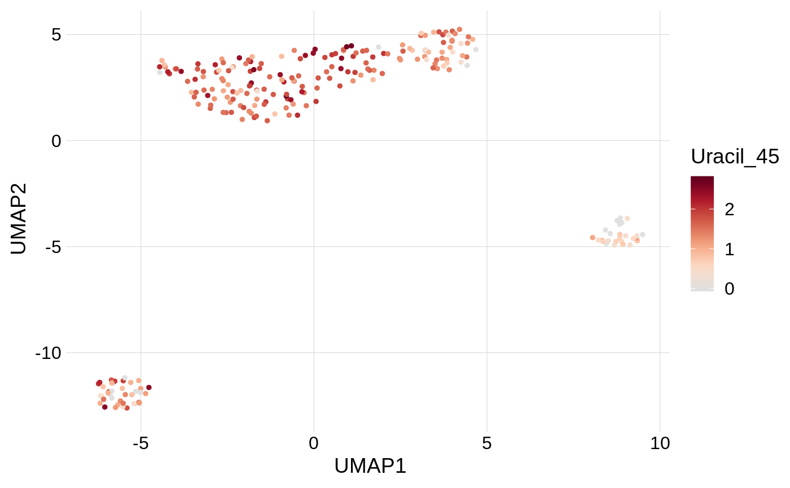
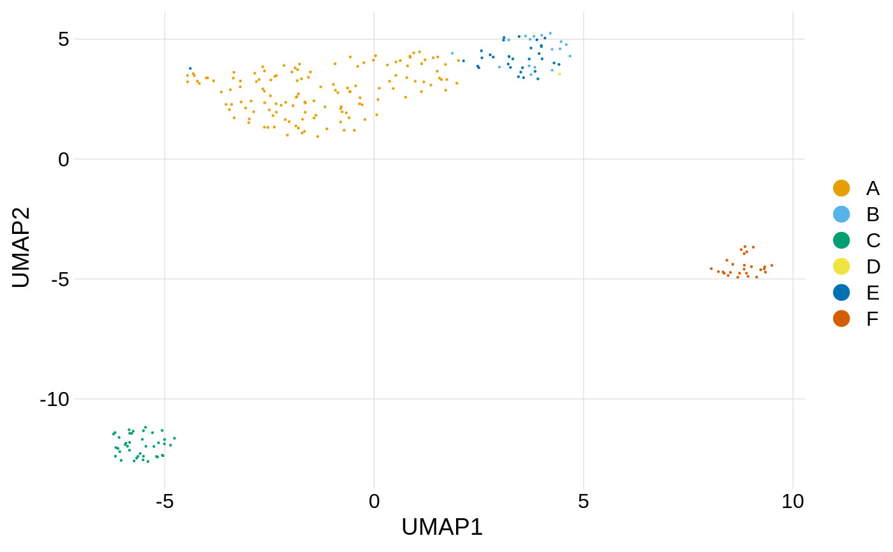
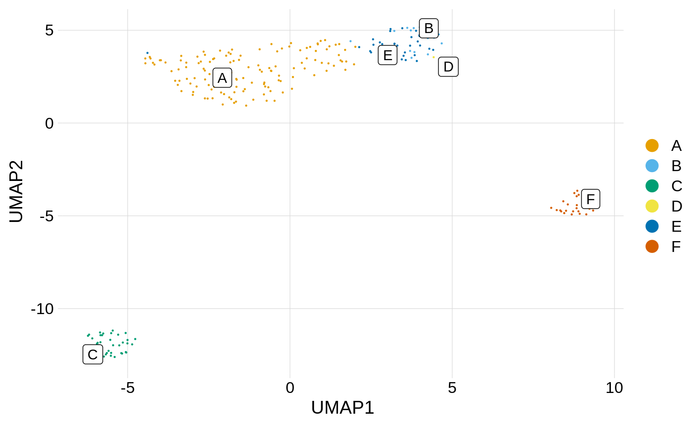

This is the base plot for superimposing annotations like cell types, cluster assignments, and measured activities.
plot_dims(df, x, y, color = "cell_id", size = 0.1, alpha = 1, palette = "cloupe", labels = NULL, label_legend = TRUE, label_groups = FALSE)
| df | plot data |
|---|---|
| x | variable for x-axis |
| y | variable for y-axis |
| color | variable for point colors (default is black) |
| size | size for |
| alpha | alpha for |
| palette | palette for continuous colors. One of cloupe (the default), brewer, viridis. |
| labels | labels for groups |
| label_legend | add labels to legend |
| label_groups | add labels to points |
Embeddings can be calculated by calc_umap() and calc_tsne(), and
retrieved with tidy_dims().
Other plot functions: plot_activity,
plot_hairpin_coverage
plot_dims(fsce_tidy, UMAP1, UMAP2, size = 1)plot_dims(fsce_tidy, UMAP1, UMAP2, IL7R, size = 1)plot_dims(fsce_tidy, UMAP1, UMAP2, Uracil_45, size = 1)plot_dims(fsce_tidy, UMAP1, UMAP2, k_cluster, size = 1)plot_dims(fsce_tidy, UMAP1, UMAP2, k_cluster, labels = LETTERS[1:6])plot_dims(fsce_tidy, UMAP1, UMAP2, k_cluster, labels = LETTERS[1:6], label_groups = TRUE)